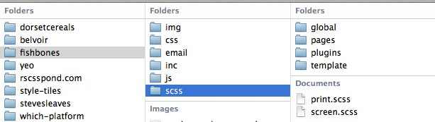
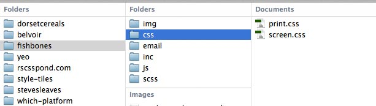
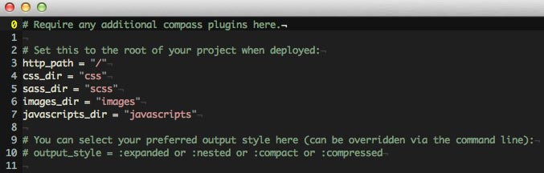
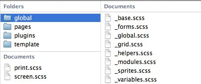
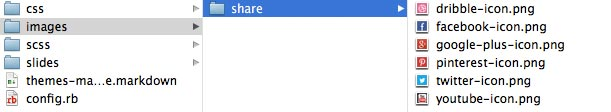

Themes made of Awesome with
SASS & Compass
by Guy Routledge | @guyroutledge
Code and working examples:
https://github.com/guyroutledge/sass-compass-talk
What is SASS?
It stands for Syntactically Awesome StyleSheets
SASS is a CSS pre-processor
Instead of writing CSS, you write SASS
and compile it into CSS.
this means you can do all sorts of clever stuff inbetween
SASS has two syntaxes
SASS and SCSS
SASS
.module
display:inline-block
margin:1em
padding:1em
background:pink
border:1px solid grey
whitespace dependent
no braces or semi-colons
SCSS
.module {
display:inline-block;
margin:1em;
padding:1em;
background:pink;
border:1px solid grey;
}
identical to CSS
any valid CSS is valid SCSS
How do I get it?
All these apps help you use SASS

Alternatively, the easy way:
$ sudo gem install compassHow do I use it
(with WordPress)?
Create a Compass Project
$ cd path/to/theme
$ compass create --sass-dir=scss --css-dir=css
$ compass watch
Whenever you make a change to a .scss
file,
Compass will compile your CSS automatically.
SASS compiles your .scss to .css


WordPress and style.css
style.css is key for WordPress themes
You could:
Set the CSS directory to the theme root: css-dir=''
Rename style.css to style.scss and write SASS
If you want to keep using style.css...
Keep the comments in tact
Begin writing your SASS beneath the theme info
To make sure SASS doesn't remove your comments:
/*!
Theme Name: SASSY Theme
...
*/source: http://css-tricks.com/compass-compiling-and-wordpress-themes/
Use the compiled stylesheet
Just enqueue the styles just like any other CSS file
<?php
wp_enqueue_style(
'global-styles',
get_template_directory_uri() . '/css/screen.css',
null,
'1.0',
'screen'
);
?>Or just add a link tag to your <head>
<link rel="stylesheet" href="path/to/css/screen.css" media="screen">But what about style.css?
style.css is only required for theme information
There's no need to include it in your <head>
Doing so would incurr an extra HTTP request
Compass Configuration
Compass creates a config.rb file in your project root
This allows you to set your paths to images, scss and css
It also allows you to change the format of compiled CSS

What does SASS do?
Organisation
https://github.com/guyroutledge/sass-compass-talk/blob/master/scss/screen.scss
SASS Partials
partials help split your styles into maintainable chunks
These are @import-ed into a SASS stylesheet
Partials are prefixed with an _

Create a global stylesheet
// In global.scss
// Partials for global styles to be compiled to global.css
@import "global-reset";
@import "global-grid";
@import "global-typography";
@import "global-header";
@import "global-footer";
@import "global-sidebar";
@import "global-forms";
@import "global-buttons";You could use a naming convention like above
although I tend to break related partials into directories
Creating multiple compiled stylesheets
If you have a big website, consider multiple stylesheets
Users only download what they need when they need it
Any changes to your stylesheet will break the cache
so having one massive stylesheet can be bad for performance
Variables
https://github.com/guyroutledge/sass-compass-talk/blob/master/scss/_variables.scss
Storing re-useable values in variables
Some common things variables are used for:
- Colors
- Global spacing (margins, padding)
- Font-stacks
- Paths to images
- Dimensions (width, height)
Declaring variables
Variables are declared using the $ sign
$variable-name: 'variable value';Variable Types
Variables can have the following types:
- String
- Number
- Colour
- Booleans (true or false)
- List
- Null
Using a naming convention
I tend to use a prefix to indicate what a variable is for
// this is confusing
$red: #c30;
$padding: 2em;
.module {
width:50%;
padding:$padding;
margin:$padding; // wtf?
color:$red;
}// this is clearer
$color-dark-red: #c30;
$global-spacing: 2em;
.module {
width:50%;
padding:$global-spacing;
margin:$global-spacing;
color:$color-dark-red;
}Nesting
Nesting allows you to write less.
https://github.com/guyroutledge/sass-compass-talk/blob/master/scss/_nesting.scss
Navigation styles in Vanilla CSS
.main-nav { /* styles */ }
.main-nav ul { /* styles */ }
.main-nav ul li { /* styles */ }
.main-nav ul li a { /* styles */ }
.main-nav ul li a:hover { /* styles */ }
.ie8 .main-nav { /* styles */ }Navigation styles in SASS
.main-nav {
// styles
ul {
// styles
li {
// styles
a {
// styles
&:hover {
// styles
}
}
}
}
.ie8 & {
// styles
}
}Warning
If you're nesting more than 3 levels deep
you probably need to refactor your styles
Mixins
Mixins allow you to reuse chunks of styles
https://github.com/guyroutledge/sass-compass-talk/blob/master/scss/_mixins.scss
Mixins accept arguments
@mixin button($background, $foreground, $font-size:1em){
display:inline-block;
padding:0.5em 1em;
color:$foreground;
font-size:$font-size;
font-family:$font-brand;
background:$background;
}
.button {
@include button(blue, white);
}
.button-error {
@include button(#f90, white, 2em);
box-shadow:0px 0px 5px rgba(red, 0.3);
}Use mixins to re-use the @content
@mixin placeholder() {
::-webkit-input-placeholder {
@content;
}
::-moz-placeholder {
@content;
}
:-moz-placeholder {
@content;
}
:-ms-input-placeholder {
@content;
}
}@include placeholder {
color:#ccc;
font-style:italic;
}Extends & Silent Classes
Variables and mixins break
up styles into re-usable chunks.
@extend allows us to use those chunks as
building blocks
https://github.com/guyroutledge/sass-compass-talk/blob/master/scss/_extends.scss
SASS and Modular CSS
A concept in OOCSS or SMACSS is the idea of base classes or modules that are extended with numerous classes
<a class="button button-large button-error" href="/help">Help!</a>
This is all well and good - but we can do better with SASS
Placeholder Classes
You will no doubt be familiar with these basic selectors
a { } /* element selector */
.button { } /* class selector */
#button-large { } /* ID selector */
But SASS gives us this 'silent' class to use as well:
%button-large { font-size:3em; }Silent What?
Any classes prefixed with a % are not
compiled but they are available to you through the
@extend feature.
Using @extend
%button {
display:inline-block;
margin:1em 0;
padding:1em 2em;
color:#fff;
font-size:1em;
background:#eee;
}
%button-large { font-size:3em; }
.comment-submit-button {
@extend %button;
@extend %button-large;
}Benefits of @extend
- Create classes named by meaning, rather than styling
- Make markup more human readable
- Reduce presentational classnames
- Make stuff more modular by creating re-usable components
- Keep the output CSS smaller as these silent classes don't compile
- Smaller files means faster websites
Color Functions
https://github.com/guyroutledge/sass-compass-talk/blob/master/scss/_color-functions.scss
Create variations on a theme
Create a colour palette from a base colour (or colours)
Adjust your colours without opening Photoshop
a {
color:$color-brand; // #f29c7b
&:visited {
color:darken($color-brand, 20%); // #e9561e
}
}Some useful SASS Colour Functions
rgba($color, $alpha);
adjust-hue($color, $degrees);
mix($color1, $color2, [$weight]);
lighten($color, $amount);
darken($color, $amount);
saturate($color, $amount);
desaturate($color, $amount);
transparentize($color, $amount);Flow Control
Conditionals, Loops and Maths
Condtionals
@if ( $condition ) {
// do stuff if $condition is true
} @else if ( $other-condition ) {
// do this instead if $condition is false
// but $other-condition is true
} @else {
// do this if neither of the above are true
}Seriously, I need this in CSS?
This could help us with an accessibility issue:
$color-background:#f29c7b; // light orange/red
$color-foreground:null;
$midpoint:(lightness(#fff) + lightness(#000))/2;
@if ( lightness($color-background) > $midpoint ) {
$color-forground:#000;
} @else {
$color-foreground:#fff;
}Loops
Repeat a block of instructions as long as a condition is true
For Loop
Run the code for every value of a counter eg. $i
@for $i from 1 through 4 {
column-#{$i}-of-4 {
width: $i * 25%;
}
}
// outputs:
// .column-1-of-4 { width:25%; }
// .column-2-of-4 { width:50%; }
// .column-3-of-4 { width:75%; }
// .column-4-of-4 { width:100%; }While Loop
Run the code while the condition is true
Have more fine-grained control of the counter $i
@while $i <= 4 {
column-#{$i}-of-4 {
width: $i * 25%;
}
$i: $i + 2;
}
// outputs:
// .column-1-of-4 { width:25%; }
// .column-3-of-4 { width:75%; }Each Loop
Run the code for each item in a list
$social-icons: twitter, facebook, google-plus, pinterest, youtube;
@each $social in $social-icons {
.share-#{$social} {
background:url('../images/#{$social}-icon.png');
}
}
// outputs
// .share-twitter { background:url('../images/twitter-icon.png'); }
// .share-facebook { background:url('../images/facebook-icon.png'); }
// .share-google-plus { background:url('../images/google-plus-icon.png'); }
// .share-pinterest { background:url('../images/pinterest-icon.png'); }
// .share-youtube { background:url('../images/youtube-icon.png'); }
What is Compass?
Compass is a SASS Framework
A bit like jQuery is to JavaScript, Compass is to SASS
And a bit like jQuery it helps you write less and do more
- Helper functions
- Pre-defined Mixins
- Image Utilities
- Magic Sprites
No more vendor prefixes
You can write your own mixins to deal with prefixes
But Compass has loads pre-defined for you
Typing Tedious vs. Compass
This is tedious:
-webkit-transform:rotate(5deg);
-moz-transform:rotate(5deg);
-o-transform:rotate(5deg);
-ms-transform:rotate(5deg);
transform:rotate(5deg);This is super fast:
@include rotate(5deg);Set link colours in a single line
Another simple but effective mixin
@include link-colors($normal, $hover, $active, $visited, $focus)So many mixins
Check out http://www.compass-style.org
Helper Functions
Hassle Free Image Dimensions
$image: 'image.png';
$padding:20px;
.element-with-bg-image {
width: image-width($image) - ($padding*2);
heigth: image-height($image) - ($padding*2);
padding: $padding;
background:url($image);
}Sprites
Remember this?
Our @each example dealt with sharing icons
.share-twitter { background:url('../images/twitter-icon.png'); }
.share-facebook { background:url('../images/facebook-icon.png'); }
.share-google-plus { background:url('../images/google-plus-icon.png'); }
.share-pinterest { background:url('../images/pinterest-icon.png'); }
.share-dribble { background:url('../images/dribble-icon.png'); }
.share-youtube { background:url('../images/youtube-icon.png'); }But we can do better with an image sprite
Sprites: the tedious way
I've made a sprite of 6 social icons
Now I have to work out the background position for each one
.share-google-plus { background-position:-100px 0; }But what if we realise no-one uses Google Plus?
If we remove it we have to do all our math again.
Sprites: the Compass way
Housekeeping
- Make sure your images directory is set correctly
- Make a sub-folder such as
/images/share - Make sure all your individual images are in PNG format

Tell Compass to be Magic
$share-sprite-dimensions: true;
@import "share/*.png";
@include all-share-sprites;
Warning: Live demo
Everything might break
What does this do?
All being well, Compass should generate this:
How do I use this?
To use these sprites, either add the classes to your HTML
<a class="share-twitter-icon" href="#">twitter</a>
Or use the sprite helper function for your desired image
.twitter {
background: sprite($share, twitter-icon) no-repeat;
}...so SASS & Compass are awesome
So What about WordPress?
Some requirements
- Local dev envioronment and install of WordPress
- Ruby installed on your system
- SASS/Compass installed
What if you want to sell themes
There are numerous SASS themes on the market
You can always develop with SASS and deliver CSS
Or you can sell both and conquor two markets at once
Is there a plugin that can help me?
There is a Wordpress-SASS plugin
It uses a PHP compiler. Which sounds a bit odd...
I haven't used it so can't really comment.
Are there any starter themes for SASS?
Yes.
Got any questions?
http://www.guyroutledge.co.uk | @guyroutledge
Code and working examples:
https://github.com/guyroutledge/sass-compass-talk